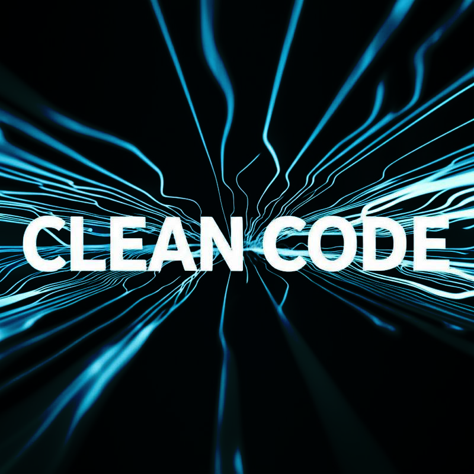

نظافة الكود (Clean Code): ليست مجرد رفاهية، بل ضرورة استراتيجية في هندسة البرمجيات الحديثة
مؤخرًا، أظهر استطلاع بسيط أجريناه أن "نظافة الكود" هي أكثر ما يقدره المبرمجون.
هذا التفضيل ليس من فراغ، بل يعكس فهمًا عميقًا لأهمية جودة الكود في دورة حياة تطوير البرمجيات.
لماذا تحظى "نظافة الكود" بهذه الأهمية القصوى في بيئة العمل الاحترافية؟
1- الاستدامة وقابلية الصيانة (Maintainability): الكود النظيف هو حجر الزاوية في بناء أنظمة قادرة على التطور
والتكيف مع المتطلبات المتغيرة بأقل تكلفة وجهد. تسهيل عمليات التصحيح، التحديث، وإضافة الميزات الجديدة يوفر
موارد قيمة على المدى الطويل.
2- تعزيز التعاون الفريقي (Team Collaboration): في المشاريع التي تعتمد على فرق عمل، يعمل الكود الواضح
والمقروء كلغة مشتركة تقلل الاحتكاك وتزيد من كفاءة الفريق وإنتاجيته.
3- تقليل الديون التقنية (Technical Debt): الاستثمار في كتابة كود نظيف منذ البداية يقي المشاريع من تراكم
الديون التقنية التي قد تعيق نموها مستقبلًا.
4- تحسين عملية الانضمام للمطورين الجدد (Onboarding): يسهل الكود المنظم على المطورين الجدد فهم بنية النظام
والمساهمة فيه بفعالية وسرعة أكبر.
5- الجودة والموثوقية: ترتبط جودة الكود ارتباطًا وثيقًا بتقليل الأخطاء (Bugs) وزيادة موثوقية النظام ككل، مما
ينعكس إيجابًا على تجربة المستخدم النهائي.
أن تبني ممارسات الكود النظيف، كالتي تدعمها أطر عمل حديثة وأساليب مثل الـ Model-Driven Architecture أو
استخدام Templating Engines فعالة (كما ناقشنا سابقًا في سياق PHP و Blade)، هو استثمار في الاحترافية والتميز
التقني.
جميع المقالات
الكود النظيف - Clean Code
برمجة
23/06/2025
